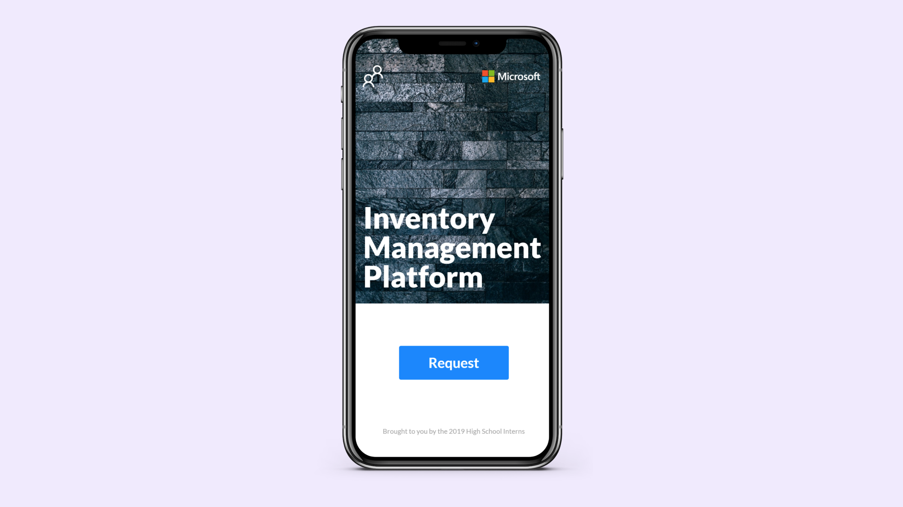
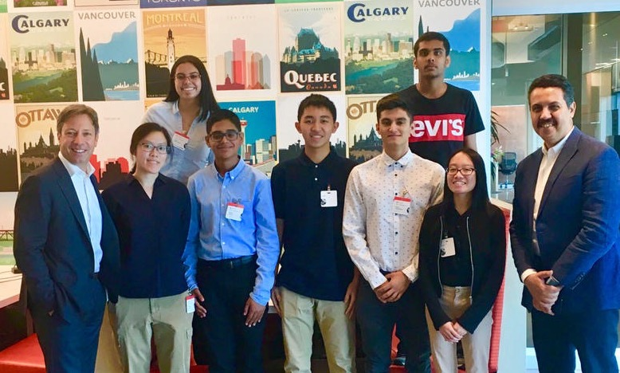
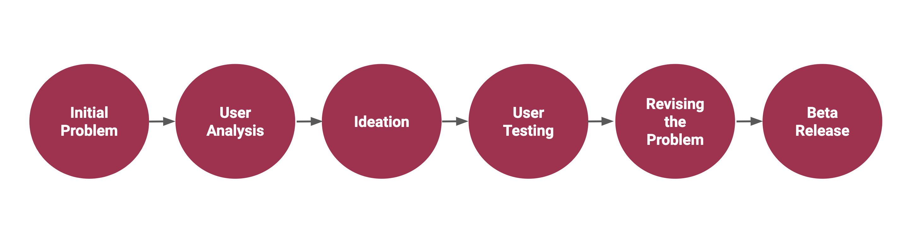
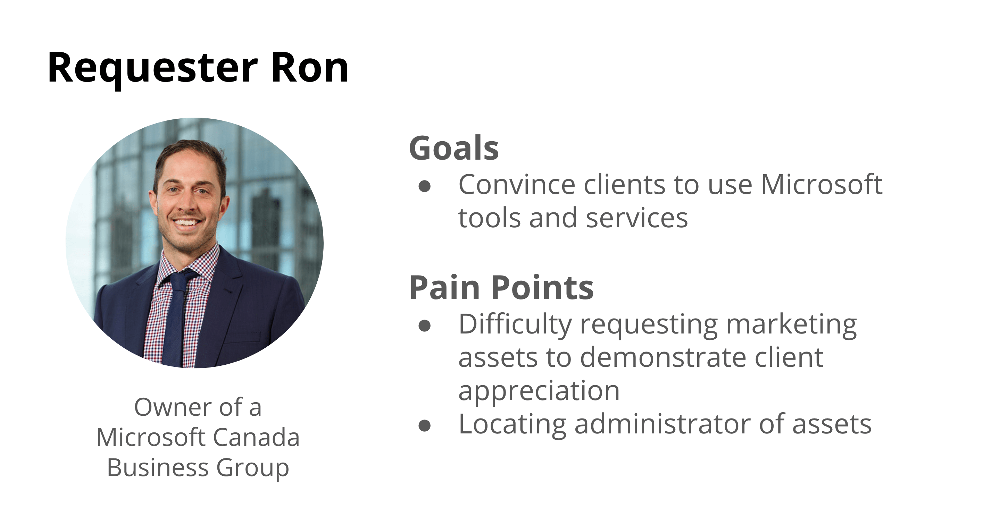
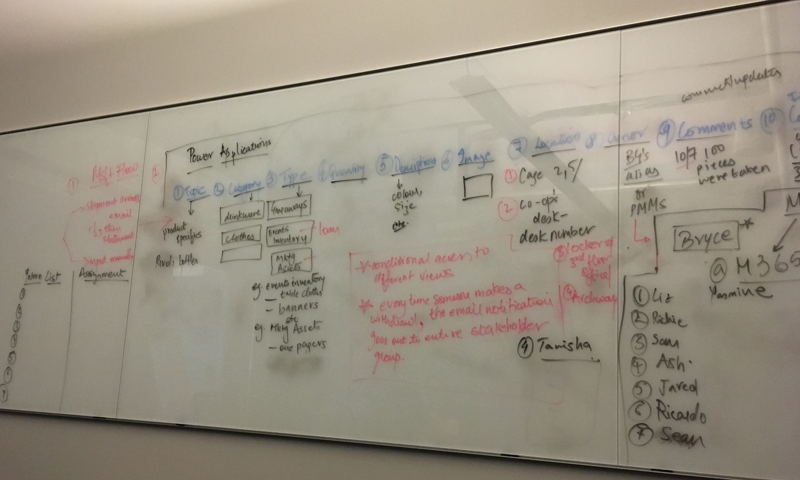
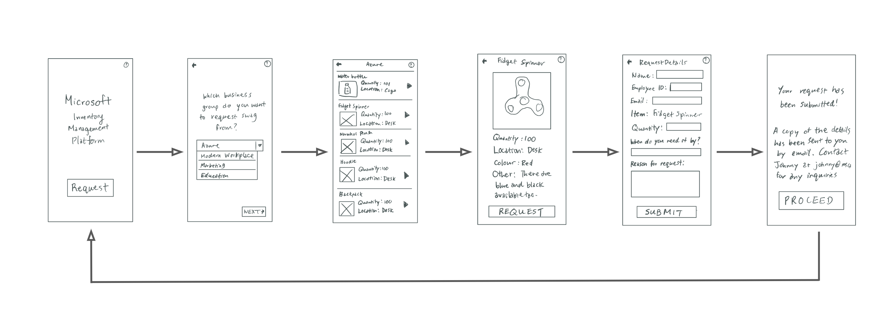
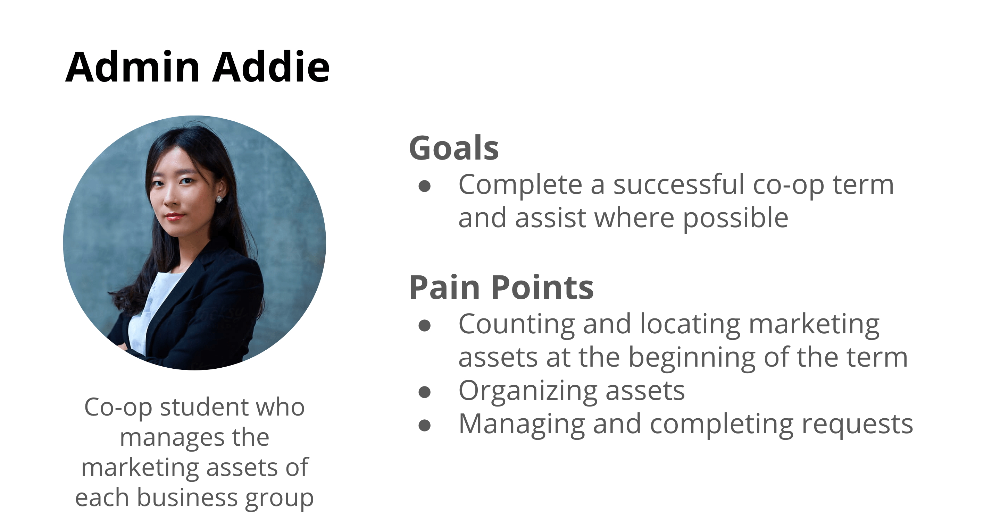
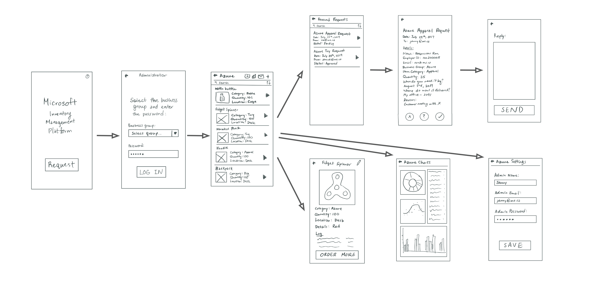
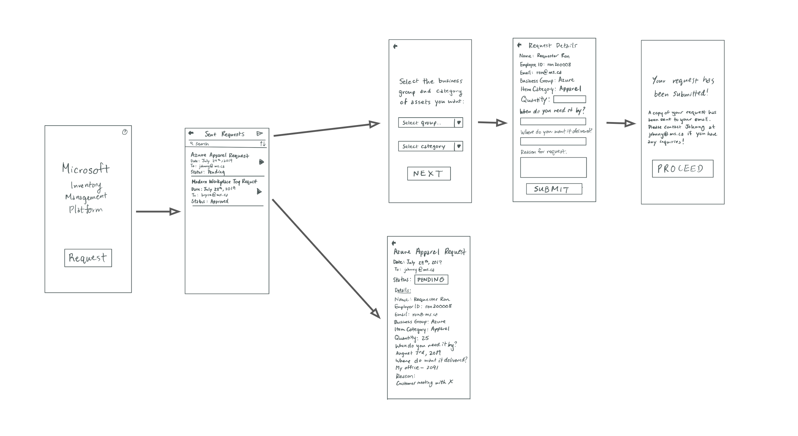
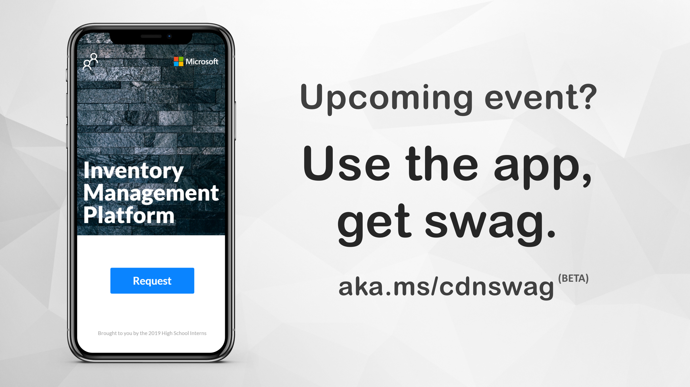

Timeline: July - August 2019 (7 weeks)
Role: Designer and frontend developer on team of 7
Tools: Sketch
Skills: User research, product design, frontend development
How might we design an application that will reduce time wasted and confusion when employees are requesting physical marketing assets by standardizing the process for requesters, as well as allow administrators to organize assets and quickly respond to requests?
Overview
In my first internship, I worked with 6 other interns to create an inventory management platform that manages marketing assets, otherwise known as swag, within Microsoft Canada. Not only can employees request swag, but administrators use it to organize and manage the swag. During the process, I interviewed potential users, created low and high fidelity mockups in Sketch, and helped to develop the front end of the application! I even got to present the project with my team at Microsoft Canada’s National Annual General Meeting.
Unfortunately, this project is under NDA, and I am unable to show images of the process work and final product. However, I included as many details about the project that I can.
Background
During the summer of 2019, I had the opportunity to intern at Microsoft. I had the opportunity to explore machine learning and artificial intelligence in Microsoft Azure, create React web applications, data visualization with Power BI, and work with the other interns to create an inventory management application that solves a real problem within the corporate office.

Responsibilities
One of the projects I worked on was an inventory management application in collaboration with the 6 other interns. For this project, I was the team’s lead and sole designer, and I got to explore the entire design process when creating the application, including research, ideation, testing, and all the further reiterations. I also got the chance to work on the front end development of the application.
Design Process

Initial Problem
We, as interns, stumbled across the initial problem that catalyzed this project when we were trying to get our hands on some Microsoft swag ourselves. When we went to request some, we ran into two problems:
So we took it upon ourselves as interns to create something that would make employees lives easier when they are requesting swag. With that, we created a problem statement to work off of.
How might we design an application to reduce wasted time and confusion of employees when requesting physical marketing assets by creating a standardized process for requesters?
User Analysis
To understand who our potential users of the application were, we interviewed multiple employees who have requested swag before to understand their goals, pain points, and understanding of the current system.
As a result, I created a persona of an employee looking to request swag to present as customer appreciation at a client’s closing meeting. However, with the current system, requesting is confusing for them, and they have trouble even locating the administrator from whom they can request from.

Ideation
Once I created the user persona, I analyzed their pain points and goals, setting out to create a solution that addresses both of these needs. Thus, I led a group brainstorming session where we whiteboarded potential ideas as shown in the image below. We utilized design techniques like Crazy 8’s and then consolidated all the different ideas into a foundational idea which we all agreed upon and would build off of in our low fidelity prototype.

Medium Fidelity Prototype
In the medium fidelity prototype, I utilized Sketch to create a basic user flow which one can navigate through to request a product. The main features include a gallery of selectable items, and writing custom messages to the administrator.
For the user flow, the application begins at the landing page where the user is presented with a call to action to request an item. They are then taken to a dropdown where they select the business group they want to request swag from since all the swag is categorized by the business group’s branding on it. Next, they are taken to a card list gallery where the user can view an image of and the details pertaining to each of the available swag items. Then, they can select the item they want to request, and indicate logistical information regarding their request. Afterwards, there is a confirmation screen that alerts the user that their request was successful and that they have been sent a copy of their request by email. The administrator receives this email and consequently fulfills the request if approved.

User Testing
After creating the medium fidelity prototype, I tested the prototype with 5 potential users. From these sessions, I learned that we had forgotten a main stakeholder and user of the application: the administrator. This is important because the administrator can also potentially utilize the application to manage the marketing assets and contain the entire requesting process within the application. As a result, these findings definitely called for a revision of the user flows and features.

Revised Problem
How might we design an application that will reduce time wasted and confusion when employees are requesting physical marketing assets by standardizing the process for requesters, as well as allow administrators to organize assets and quickly respond to requests?
With this revised problem statement in mind, the application now becomes two-fold where there is a requesting portal, and an administrator portal to allow for the two different sets of interactions.
High Fidelity Prototype
For the high fidelity prototype, I revised the Sketch prototype and prepared it for developer handoff. Some major changes were implemented to accommodate an administrator portal and allow for the requester to view all of the requests they have made and their status.
Regarding the administrator portal, on the landing page, I included access for them in the form of a distinct icon. Subsequently, the admin must input their credentials to log into a business group. This enables only certain people to access the admin portal. Within the portal, they can view all of the assets they currently have, including a quick summary of its details like location and quantity. By clicking into the item, they can view a log of all the transactions related to the item, a data analysis generated by Power BI, and the option to order more of the same item. Also, the admin can view all of the requests they have received, as well as respond to the requester with an acceptance, rejection, or alternative offer. They receive notifications for every request they receive.

On the flip side, the requester also got an upgrade since the previous iteration. When initially clicking “request”, they are taken to the requester portal and can see all of their previous requests in an inbox fashion. Then, they can send a new request and follow a similar process described in the medium fidelity prototype. The difference is that the additional details such as quantity or location of the physical swag items have been removed to streamline the requesting process and to allow for a fair system. Also, requesters can view the status of their request by clicking into the request. They would also get a notification when a status has changed.

After completing the high fidelity mockups in Sketch, I prepared the mockups for development and was even able to do some of the front end development myself. It was a new experience for me, and I really enjoyed it!
Outcomes
With the coded product and some more testing, we released the beta version of the application! To promote our release and encourage onboarding, I designed a series of advertisements to be put up around the building and on the TV. As far as I know, the application is still being used internally at Microsoft’s Meadowvale office today!

Also, our project team was invited to speak at Microsoft Canada’s National Annual General Meeting in September. At the conference, we presented our project in front of 800 employees and received a lot of positive feedback! It was a truly amazing time being able to show off our hard work and share our learnings with everyone. I also got to meet so many of the other attendees and learn from their own experiences.
While I was at Microsoft, I got to participate in an interview with my school board, talking about my journey of pursuing a tech career which you can view here. After my internship, I wrote an article about the 3 things I learned and loved while interning at Microsoft. I highlighted many of the experiences that I got to partake in, and hopefully can take forward to future internships. You can read my article here.
Next Steps
Even though we released the beta version of the platform, there are a few improvements that can be made in the future. With this in mind, we left our project successors with a few items that they may choose to address in future iterations of the application:
Personally, I learned a few things from this project that are my next steps for the work I do in the future.
In this project, we missed a key stakeholder early on, resulting in an incomplete scope for the application. Now, I know that I need to conduct more user tests and keep an open mind before committing to a solution right away.
For the application to become a reality, there must be clear communication between designers and developers. Thus, I started to learn front end development to help foster my communication skills as a designer.
Even though I was just learning the ropes as a junior designer, I quickly learned that even as an intern, I can incite positive change within an organization as large as Microsoft as long as I have the passion and dedication to do so!
Conclusion
Overall, my time at Microsoft working on the Inventory Management Platform was definitely one to remember. Since this was my first project with a team of 7 and working for a large corporation, I learned so much throughout the two months about working in a team, corporate workplaces, UX design, and front end development. I am proud of the work that we were able to accomplish as a team, and especially as interns, created something that has an impact on an organization like Microsoft!